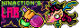

nearby

incredible layout which inspired my own and bursting with passioniate pages about biology and media
oozing with so much crunchy low poly charm i want to CONSUME its goofy trinkets, shrines and thoughts


calm radio and soothing palette is so relaxing - some lovely shrines and very evocative writing
unapologetically bleeding bright colours and dumb sfx at every turn the creativity is incredible

off-grid

really awesome solaris vibe, hilarious 'guestbook', whimsical articles and a really fun secret to discover
ridiculously cute windows vibe, fun creature report, cool projects and media logs (i always adore these)

more to come as i explore more of the indie web...
 back
back